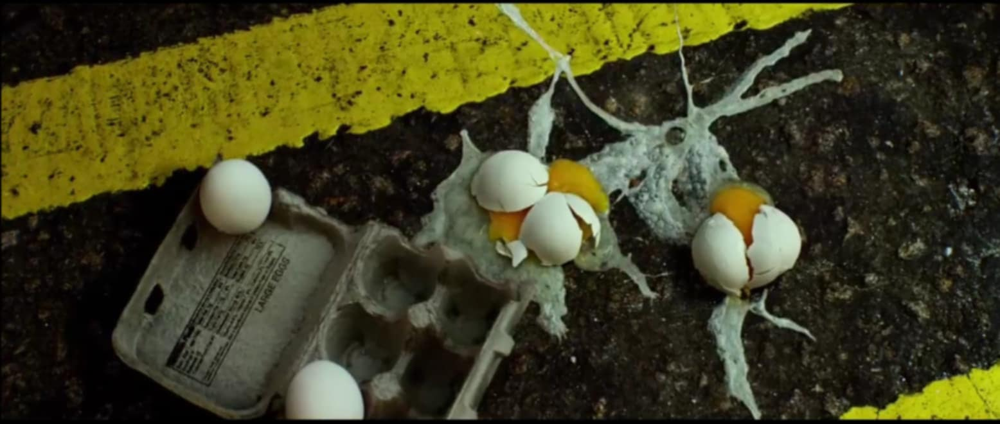

GEOSTORM
Article about geostorm
Geostorm is a 2017 science-fiction disaster film directed by Dean Devlin in his feature directorial debut. It stars Gerard Butler as Jake Lawson, a satellite designer tasked with saving Earth from a catastrophic "geostorm" caused by malfunctioning weather-control satellites. The ensemble cast includes Jim Sturgess, Abbie Cornish, Ed Harris, and Andy García.
The plot centers on the "Dutch Boy Program," an advanced satellite system designed to control Earth's weather and prevent natural disasters. However, when the system is sabotaged, it triggers devastating weather events worldwide, such as freezing temperatures in Rio de Janeiro, heatwaves in Hong Kong, and lightning storms in Orlando. Jake Lawson and his team must uncover the conspiracy behind the sabotage and prevent the impending global disaster.
Despite its ambitious concept, Geostorm received mixed to negative reviews. Critics highlighted its predictable plot, weak character development, and reliance on disaster clichés. Its visual effects, while impressive, were considered less memorable than similar films like The Day After Tomorrow. The movie grossed $221.6 million worldwide against a $120 million budget, but high marketing and production costs led to its classification as a box office disappointment.
While flawed, Geostorm touches on compelling themes of climate control, technological dependence, and global unity. Its action-packed narrative and dramatic weather sequences make it an entertaining, albeit imperfect, addition to the disaster film genre.
FAVORITE SCENE ON GEOSTORM
1.This is the first disaster shown in the film, it started at Hongkong, where a pool of lava started exploding from the ground.
2.This part is where the disasters spread all over the world.
3.This is the part where Jake went back to space to fix the problem on his invention.
4.This part, Jake fixed everything and all disasters stopped, and Jake went back to Earth.
5.This is the part where the destruction of the space station was complete, everyone thought Jack died here.